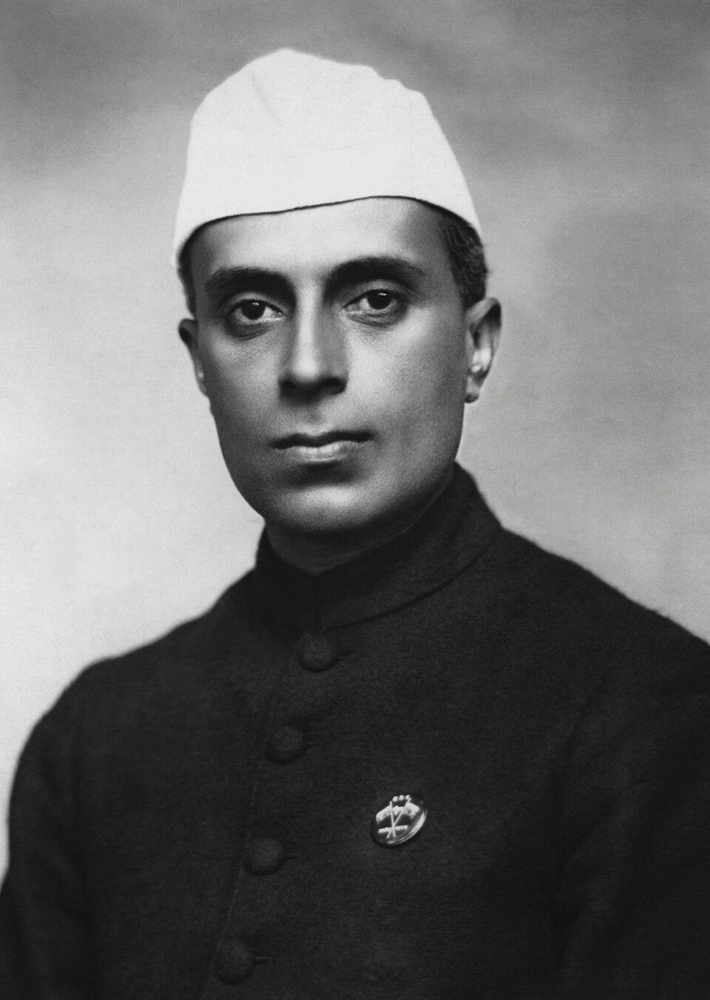

La India conquista su independencia a la medianoche
Cuando los relojes marcaron las doce, el Imperio arrió su bandera y nació el dominio libre de la India. Jawaharlal Nehru habló de una cita con el destino ante la Asamblea Constituyente. La libertad llega, sin embargo, partida en dos y ensombrecida por la violencia entre comunidades.

A la hora en que la ciudad suele apagarse, Nueva Delhi entera estaba despierta. Cuando los relojes marcaron la medianoche, la Asamblea Constituyente estalló en vítores y las caracolas rituales sonaron en el recinto: después de casi dos siglos de dominio británico, la India es desde hoy una nación libre. Jawaharlal Nehru, primer ministro del nuevo Estado, pronunció ante los constituyentes las palabras que ya corren de boca en boca: «Hace muchos años concertamos una cita con el destino, y llega el momento de cumplir nuestra promesa». Afuera, una muchedumbre inmensa gritaba el nombre de la India bajo la noche calurosa de agosto.
Lord Mountbatten, último virrey del Imperio en la India, dejó de serlo en el instante mismo de la medianoche y permanecerá como gobernador general del nuevo dominio, a pedido de sus propios dirigentes. Durante la jornada se sucedieron las ceremonias: la bandera azafrán, blanca y verde, con la rueda de Asoka al centro, fue izada entre salvas y lágrimas donde ayer flameaba la enseña británica. Un día antes, en Karachi, había nacido el otro Estado surgido de la partición: el Pakistán musulmán, que encabeza Mohammed Ali Jinnah. El subcontinente, unido bajo una sola corona durante generaciones, queda desde hoy dividido en dos patrias.
La independencia corona una lucha de décadas que asombró al mundo por su método: la resistencia sin armas. Desde las campañas de desobediencia civil hasta la célebre marcha de la sal, el movimiento que encabezó Mohandas Gandhi fue doblegando al imperio más vasto de la tierra sin disparar un tiro. La guerra mundial hizo el resto: Gran Bretaña, exhausta y endeudada, comprendió que ya no podía sostener el Raj. El gobierno laborista de Londres envió a Mountbatten con el mandato de entregar el poder, y el plan de partición, aceptado a regañadientes por los partidos, fijó para hoy la fecha de la libertad.
Pero el hombre que hizo posible este día no está en Nueva Delhi. Mohandas Gandhi, a quien las multitudes llaman Mahatma, alma grande, pasa la jornada en Calcuta, entregado al ayuno y la oración, tratando de apagar con su sola presencia la matanza entre hindúes y musulmanes. La partición ha desatado un éxodo que espanta: millones de familias cruzan en ambas direcciones la nueva frontera del Punjab, y llegan noticias de aldeas incendiadas y de trenes atacados. Cuentan que el anciano, invitado a los festejos, respondió que no podía celebrar mientras el país se desangraba. Su silencio pesa hoy tanto como los discursos.
El diario registra hoy un acontecimiento que excede a la India: por primera vez, una posesión colonial de esta magnitud conquista su libertad, y lo hace por la vía de la persuasión antes que por la de la pólvora. Cuatrocientos millones de almas entran en la historia como ciudadanos y no como súbditos. Nadie puede prever si el ejemplo cundirá en Asia y en África, ni si las dos patrias nacidas de la partición aprenderán a convivir en paz. Pero algo parece seguro desde esta medianoche: el tiempo de los imperios ha comenzado a terminar, y no habrá arsenal capaz de restaurarlo.